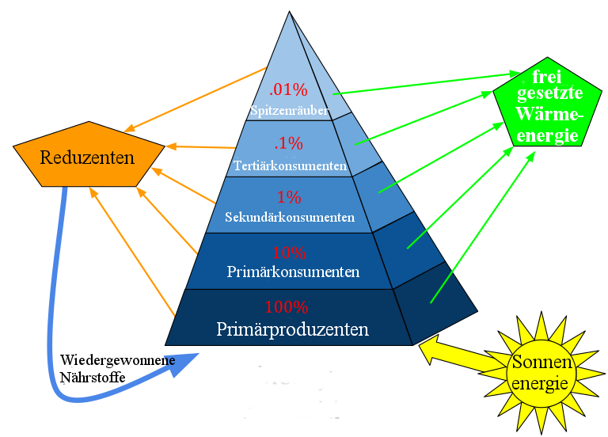

Ökosystem Teich
Der Teich bietet einer Vielzahl von Lebewesen einen Lebensraum und bildet ein eigenes Ökosystem. Die dort vorhandenen Organismen können grob in Produzenten und Konsumenten unterteilt werden. Produzenten erzeugen Biomasse, indem sie anorganische Nährstoffe verbrauchen. Zu den Produzenten gehören beispielsweise Pflanzen und Algen. Konsumenten dahingegen fressen die Produzenten, aber auch kleinere Konsumenten. Diese Beziehungen können in einer Nahrungspyramide dargestellt werden, hierbei spricht man dann von Trophie-Ebenen.
Erstellt von Swiggity.Swag.YOLO.Bro, lizenziert unter CC BY-SA 4.0.
{kind=link}
Die Trophieebenen der Nahrungspyramide
1. Primärproduzenten (Pflanzen): Die Basis der Nahrungspyramide bilden die Produzenten. Das sind Pflanzen wie Algen, Wasserpflanzen und Phytoplankton, die Sonnenlicht nutzen, um durch Fotosynthese Nahrung zu produzieren. Sie erzeugen die Energie, die das ganze Ökosystem antreibt.
2. Primärkonsumenten (Pflanzenfresser): Auf der nächsten Ebene finden wir die Primärkonsumenten. Das sind Tiere, die Pflanzen fressen, wie Wasserflöhe, Kaulquappen und Schnecken. Sie ernähren sich von den Produzenten und nehmen deren Energie auf.
3. Sekundärkonsumenten (kleine Fleischfresser): Die Sekundärkonsumenten fressen die Primärkonsumenten. Dazu gehören Tiere wie kleine Fische, Frösche und Libellenlarven. Sie jagen und fressen Pflanzenfresser und nehmen dadurch die Energie der Produzenten indirekt auf.
4. Tertiärkonsumenten (größere Fleischfresser):Auf dieser Ebene befinden sich die Tertiärkonsumenten. Diese größeren Fleischfresser fressen die Sekundärkonsumenten. Beispiele sind größere Fische, Reiher und Schlangen. Sie stehen an der Spitze der Nahrungspyramide im Teich.
5. Reduzenten/Destruenten (Zersetzer): Destruenten wie Bakterien, Pilze und Würmer spielen eine besondere Rolle. Sie zersetzen abgestorbene Pflanzen und Tiere und recyceln Nährstoffe zurück in das Ökosystem. Dadurch werden diese Nährstoffe wieder für die Produzenten verfügbar.
Energiefluss im Trophiesystem:
Zwischen den Trophieebenen wird die Energie an die nächste weitergegeben, allerdings nur etwa 10 %. Die restliche Energie geht unter anderem als Wärme verloren. Das System der Trophieebenen kann auf alle Ökosysteme angewendet werden und selbst auf die menschliche Nahrungsproduktion. Um ein Kilo Rindfleisch zu produzieren werden über 10 Kilogramm Pflanzen benötigt, was auch einen riesigen Wasserverbrauch bedeutet.